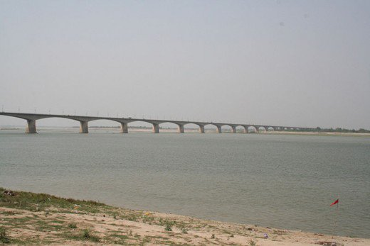

TOP 10 BRIDGES IN INDIA

Dr. Bhupen Hazarika Bridge (9.15 KM) - Assam - 2017
Mahatma Gandhi Setu (5.75 KM) - Bihar - 1982
Bandra-Worli Sea Link (5.57 KM) - Maharashtra - 2009
Bogibeel Bridge (4.94 KM) - Assam - 2018
Vikramshila Setu (4.7 KM) - Bihar - 2001
Vembanad Rail Bridge (4.62 KM) - Kerala - 2011
Digha-Sonpur Bridge (4.55 KM) - Bihar - 2016
Arrah-Chhapra Bridge (4.65 KM) - Bihar - 2017
Godavari Bridge (4.13 KM) - Andhra Pradesh - 2015
Munger Ganga Bridge (3.69 KM) - Bihar - 2016